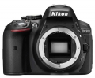

器材库 > APS及其以下画幅可换镜头数码相机 > D5300

规格总览
产品类型
APS画幅可换镜头数码相机
发布日期
2013-10-17
影像规格
影像传感器
CMOS
影像传感器尺寸
23.5 × 15.6mm
总像素
2478万
有效像素
2416万
静态图像尺寸
6000 × 4000(L), 4496 × 3000 (M), 2992 × 2000 (S)
静态图像格式
JPEG, NEF(RAW), NEF(RAW)+JPEG
短片尺寸
• 1920 × 1080; 60p（逐行）/50p/30p/25p/24p, ★ 高/ 标准 • 1280 × 720; 60p/50p, ★ 高/ 标准 • 640 × 424; 30p/25p, ★ 高/ 标准
短片格式
MOV
短片音效
线性PCM
除尘系统
图像传感器清洁、气流控制系统、图像除尘参考数据（需搭配另购的Capture NX 2 软件）
镜头和对焦
镜头卡口
Nikon F
兼容镜头
AF-S 和AF-I 镜头可使用自动对焦；其他G 型和D 型镜头、AF 镜头( 不支持IX 尼克尔镜头和F3AF 镜头) 和AI-P 镜头不可使用自动对焦；非CPU 镜头可用于模式 (M)，但照相机曝光测光功能将不运作；最大光圈为f/5.6 或以上的镜头可使用电子测距仪
对焦系统类型
Multi-CAM 4800DX 自动对焦模块具备TTL 相位侦测
对焦点
39 个对焦点（包括9 个十字型感应器）
对焦模式
自动对焦 (AF) ：单次伺服自动对焦 (AF-S) ；连续伺服自动对焦 (AF-C) ；自动AF-S/AF-C 选择 (AF-A)；根据拍摄对象状态自动激活预测对焦跟踪 • 手动对焦 (MF) ：可使用电子测距仪
AF辅助灯
有
手动对焦
支持
曝光控制
测光系统
使用2016 像素RGB 感应器进行TTL 曝光测光
测光模式
中央重点测光, 多分区评价测光, 点测光
测光范围
矩阵或中央重点测光：0 至20EV~点测光：2 至20EV
曝光模式
Auto, P（程序自动曝光）, A（光圈优先自动曝光）, S（快门速度优先自动曝光）, M（手动测光曝光）
场景模式
夜景, 海景及雪地, 食物, 儿童, 宠物, 烛光, 日落, 人像, 风景, 运动, 夜间人像, 鲜花, 近摄, 宴会/室内, 黄昏/黎明, 秋色
快门类型
电子控制，纵走式，焦平面快门
快门速度
1/4000 至30 s，以1/3 或1/2 EV 为步长调校，B 门，遥控B 门（需要另购的遥控器ML-L3）
曝光补偿
±5EV以1/3 或 1/2EV级调整
自动曝光锁
有
ISO感光度
ISO 100 至12800，以1/3 EV 为步长调校； 高于 ISO 12800 时，感光度也可以约0.3、0.7 或1 EV（相当于ISO 25600）作定级递增；具备自动ISO 感光度控制
白平衡
日光, 白炽灯, 闪光灯, 阴天, 荧光灯, 阴影, 自动, 预设白平衡
自拍
10秒, 2秒, 5秒, 20秒
连拍
• CL最高约3 幅/ 秒 • CH最高约5 幅/ 秒（JPEG 和12 位NEF/RAW）或4 幅/ 秒（14位NEF/RAW）
闪光灯
内置闪光灯
弹出式
闪光指数
约为12，使用手动闪光约为13 (m, ISO 100, 20°C)
闪光补偿
-3 至 +1EV以1/3 或 1/2EV级调整
取景器/显示屏
取景器
眼平五面镜
取景范围
95%
取景放大倍率
0.82倍
屈光度调节范围
-1.7 至+1.0 m-1
反光镜
快速瞬回半透明
LCD类型
彩色TFT LCD
LCD尺寸
3.2英寸
LCD像素
103.7万
视野率
100%
LCD特性
翻转屏
文件输入/输出
存储卡
SD/SDHC, SDXC
数据接口
高速USB
视频/音频接口
HDMI 输出, Video 输出 (NTSC/PAL)
无线功能
Wi-Fi
电源
电池
1 节EN-EL14a 锂离子可充电电池
外接电源
电源适配器EH-5b ；需要照相机电源连接器EP-5A（另购）
机身规格
颜色
黑色, 红色, 灰色
尺寸
125 x 98 x 76mm
重量
仅机身 480g
其它
配件端口
热靴, 脚架螺丝孔
工作温度
0~40℃
工作湿度
不高于85%
附件
EN-EL14a 锂离子可充电电池、充电器MH-24、接目镜盖DK-5、橡胶接目镜罩DK-25、USB 连接线UC-E17、音频/ 视频线EG-CP16、照相机背带AN-DC3、机身盖BF-1B、配件热靴盖BS-1、ViewNX 2 CD-ROM 光盘
SOnion2014-10-22 12:554.5 分
操作性 5.00功能性 5.00美观性 4.00趣味性 4.00耐用性 4.00性价比 5.00解像力 5.00色彩还原 4.00
小广咪咪2014-07-16 17:554.31 分
操作性 4.00功能性 5.00美观性 4.00趣味性 4.00耐用性 4.00性价比 5.00解像力 4.50色彩还原 4.00
产品图 / 样片
尼康 D5300
评测 / 相关文章
- 详细内容 （存档）
- 入门再加强 尼康D5300详细评测 （存档）
- ［资讯］尼康Df、D5300恳谈会访谈实录 （存档）
- ［资讯］尼康D5300官方样张赏析 （存档）
- ［资讯］尼康发布DX格式数码单反相机D5300 （存档）
相关文章
- ［试用］入门再加强 尼康D5300详细评测 （存档）
- ［资讯］尼康Df、D5300恳谈会访谈实录 （存档）
- ［资讯］尼康D5300官方样张赏析 （存档）
- ［资讯］尼康发布DX格式数码单反相机D5300 （存档）
- ［资讯］尼康D5300 （存档）